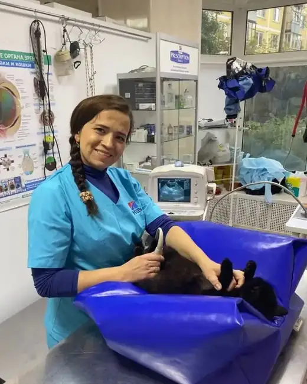

Офтальмология
Тамара Юрьевна Лозовская
Врач-офтальмолог
- Проводит операции на веках и глазном яблоке, включая микрохирургические.
- Назначает современные высокоэффективные препараты.
- Работает по методике офтальмологического обследования с тест-полосками — оценка слёзопродукции и проходимости слёзных путей.
Записаться к офтальмологу
Приём — 1 500 ₽ · операции на веках от 3 000 ₽